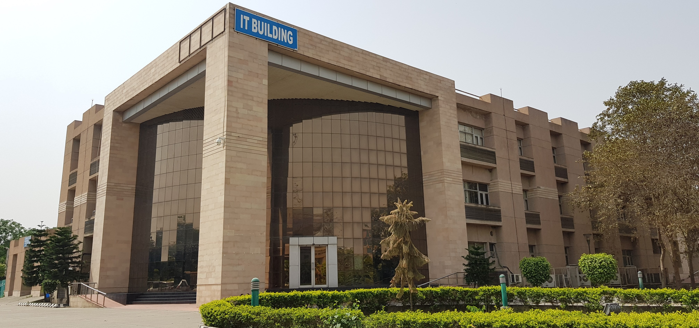
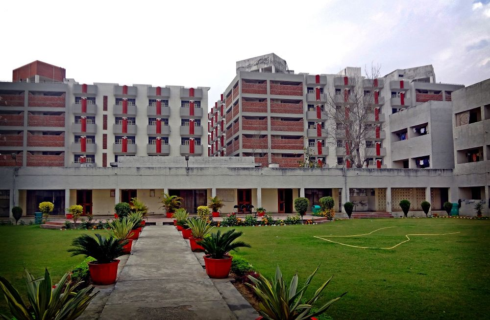
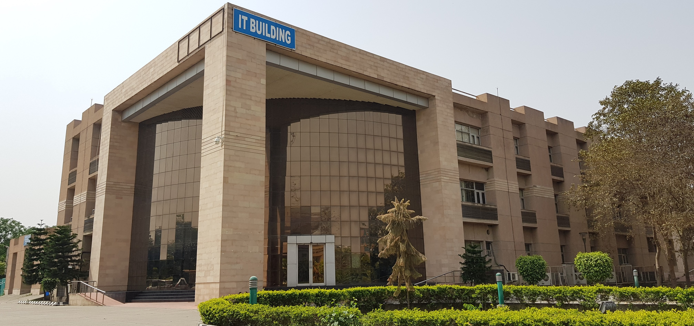
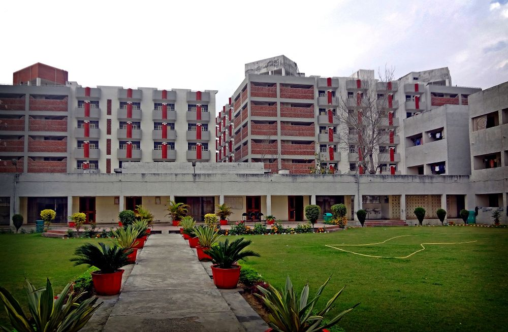
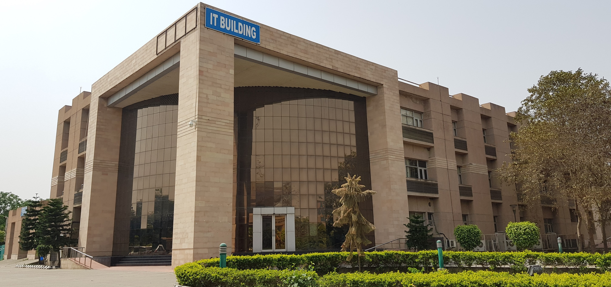
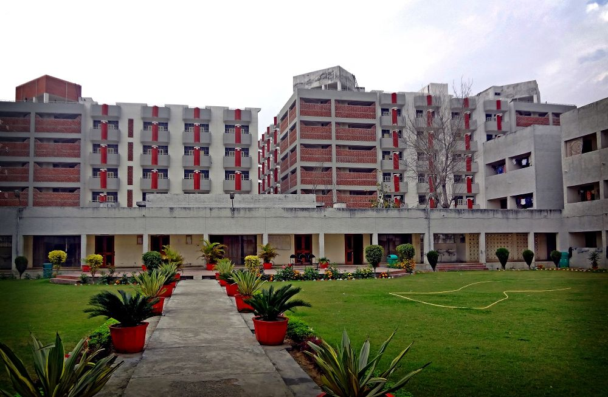

Notices
Jalandhar, Punjab, India


Dr. B.R. Ambedkar National Institute of Technology (NIT) Jalandhar is a premier engineering institute located in Jalandhar, Punjab. Established in 1987, it is one of the 31 NITs in India and was granted the status of an Institute of National Importance in 2007. NIT Jalandhar offers undergraduate, postgraduate, and doctoral programs in various engineering disciplines, sciences, and management.
The campus spans over 154 acres, providing state-of-the-art facilities, including well-equipped laboratories, a central library, hostels, and sports complexes. The institute is known for its vibrant student culture, with various clubs and societies promoting extracurricular activities and innovation.
The undergraduate program is based on the Joint Entrance Examination (JEE) Main, and admissions to postgraduate programs are primarily through GATE and other national-level exams. NIT Jalandhar is also actively involved in research and collaborations with industries and institutions worldwide, promoting research excellence and innovation.
The Training and Placement Cell of the institute maintains strong connections with top companies, facilitating impressive placement records across various engineering and technological fields. NIT Jalandhar is dedicated to fostering academic excellence, professional skills, and holistic development among students, preparing them for successful careers in the global industry.